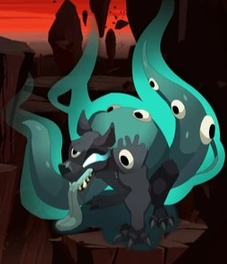
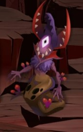
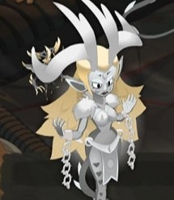
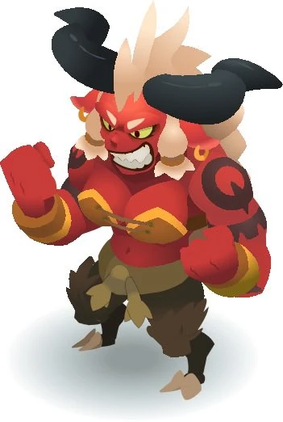

Rushu est l'un des Dix Démons Primordiaux et est le Roi des Shushus.

Médoroziam
Ecaflip est le Dieu de la chance et de l'amour du jeu, il est
l'un des Douze Dieux Majeurs. Avec lui, ça passe ou ça casse !
Il ne fait jamais dans la demi-mesure, et ses disciples, les
Ecaflips non plus ! Ceux-ci n’hésitent d’ailleurs pas à faire
appel au hasard, et à parier leurs vies ou leur fortune… sur un
lancer de dés !

Veel'Enthia
Eniripsa est la Déesse de la médecine.

Helzbeth
Enutrof est le Dieu de la fortune, et est l'un des Douze Dieux
Majeurs. Il aime amasser ce qui est précieux. Ses disciples, les
Enutrofs manipulent pelles et pioches comme personne, à la
recherche de trésors enfouis.

Reine Cornue
Féca est la Déesse protectrice aux boucliers et à la volonté de
fer, elle est aussi l'une des Douze Dieux Majeurs. Armée de son
bouclier, elle protège ses disciples, les Fécas de tous les
dangers du Krosmoz ! Ils adoptent d’ailleurs le même
comportement et n’hésitent pas à défendre leurs amis, hommes ou
Bouftous, contre les attaques les plus dévastatrices !